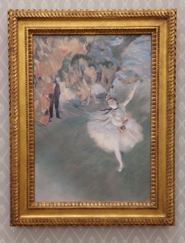

<!doctype html>
<html lang="ja">


<head>
    <title>クラシック曲レコメンドアプリ
    </title>
    <meta charset="utf-8"/>
    <link rel = "stylesheet" href = "../static/css/style.css">
    <link rel="stylesheet" href="https://cdn.jsdelivr.net/bxslider/4.2.12/jquery.bxslider.css">
    <script src="https://ajax.googleapis.com/ajax/libs/jquery/3.1.1/jquery.min.js"></script>
    <script src="https://cdn.jsdelivr.net/bxslider/4.2.12/jquery.bxslider.min.js"></script>
    
    <script type="text/javascript">
            $(document).ready(function(){
                $('#slider2').bxSlider({
                    auto: true,
                    pause: 5000, // 画像がスライドするスピード
                    slideWidth: 1255, // 画像の横幅
                });
            });
    </script> 
</head>


</html>
<body>
    <header>
        <h1>Welcome to Classical Music Recommend Application!</h1>
    </header>

    <main>
          <div id="slider2">
            
            
            
            
            
            
            
            
          </div>
       
        <h2> ♪ good life with classical music ♪ </h2>
        <div class="content">
           <a href="/kibun1">今の気分を入力！</a> 
        </div>
        <div id="slider">
            <p class="image-container">
              
              
              
              
              
            </p>
        </div>
        
    </main>

    <footer>
        <div class="footer_logo">©︎takada moe</div>
    </footer>
</body>
</html>